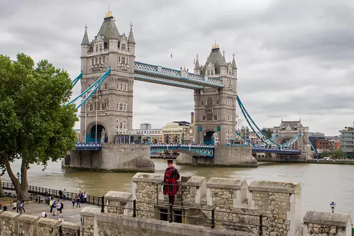
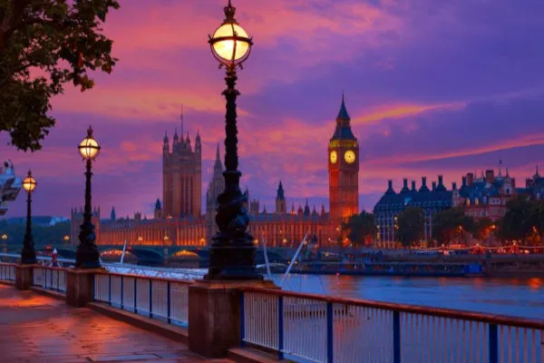
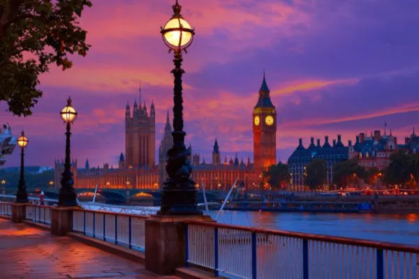
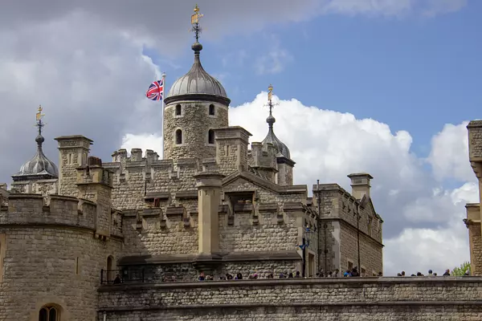
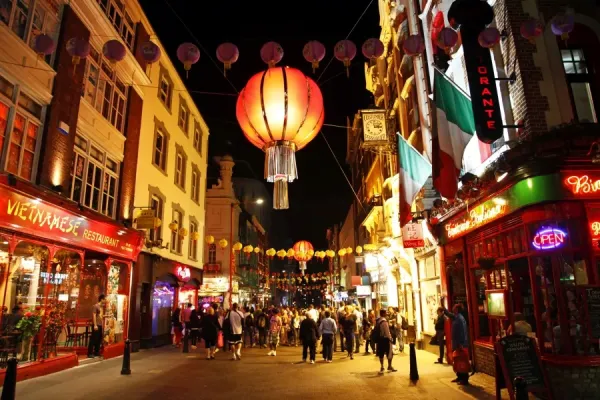
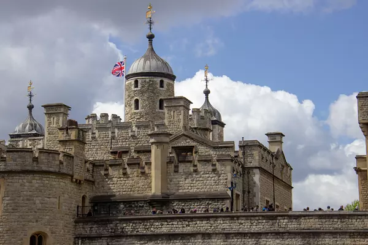
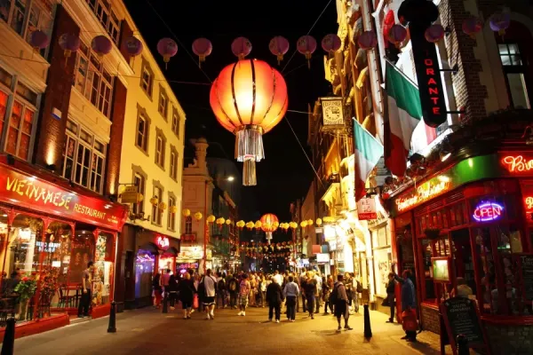
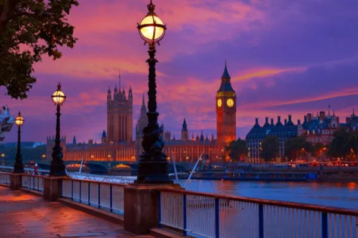
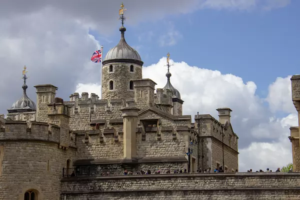
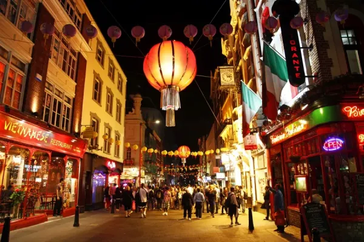

Multimedia
Nesta página encontra conteúdos multimedia.
Vídeo | Poesia | Fotografias
Vídeo
Poesia
Londres acorda com neblina,
O Tâmisa reflete o céu cinzento,
Big Ben marca a vida apressada,
E a cidade respira histórias sem tempo.
id="fotografias">Fotografias

 

 






